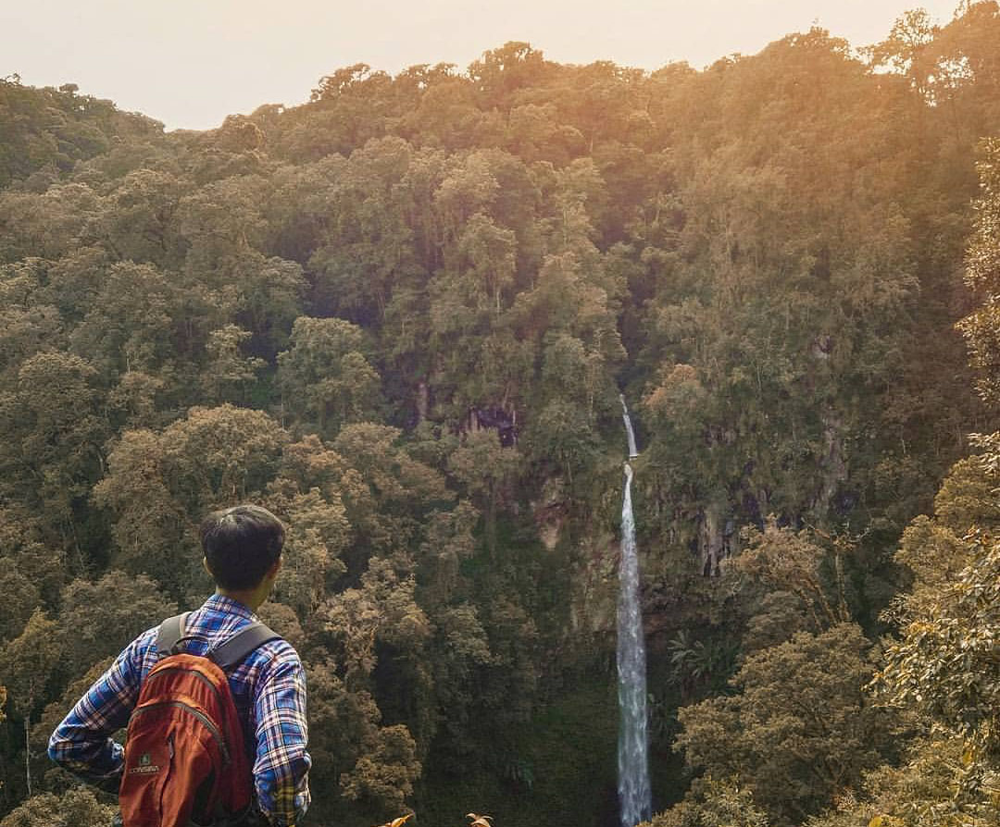
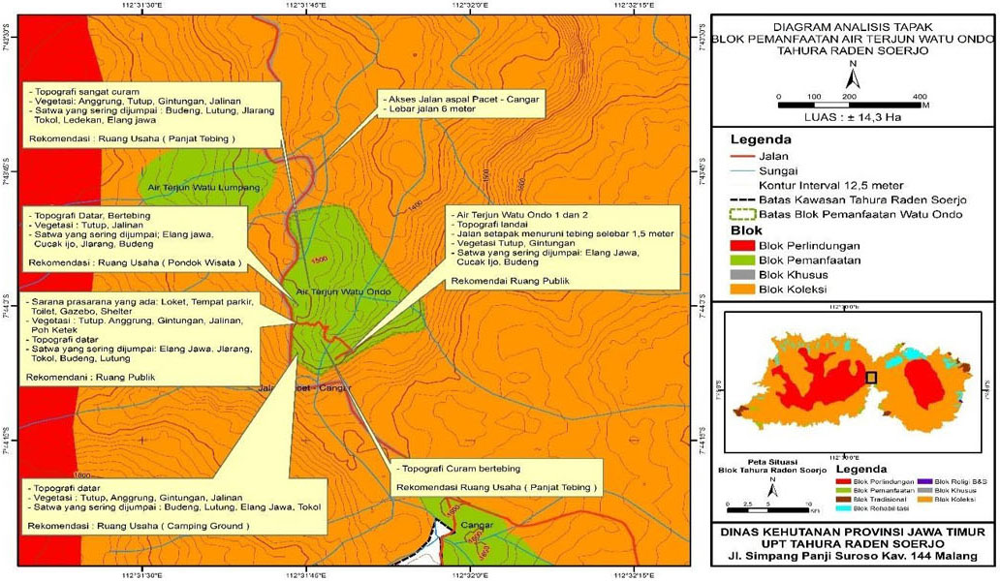

Sudah tahukah kamu? Bahwa Blok pemanfaatan Air Terjun Watu Ondo berada pada posisi 7° 43’ 48,746”– 7° 44’ 7,760 LS dan 112° 31’ 42,829” – 112° 31’ 55,940” BT seluas ± 14,3 hektar merupakan bagian kawasan Tahura Raden Soerjo diperuntukkan sebagai blok pemanfaatan, terletak di wilayah Kabupaten Mojokerto Kecamatan Pacet Desa Pacet. Blok pemanfaatan air terjun Watu Ondo memiliki topografi datar, landai dan curam. Pada areal datar dan landai sangat strategis untuk pembangunan sarana dan prasarana kegiatan pariwisata alam seperti Camping Ground, Outbound, dan Panjat Tebing.
Obyek wisata alam Air Terjun Watu Ondo memiliki dua buah air terjun dengan ketinggian masing-masing ± 100 meter dan ± 30 meter . UPT Tahura Raden Soerjo selama 10 tahun terakhir, telah membangun beberapa sarana di Blok Pemanfaatan Air terjun Watu Ondo yang dapat memudahkan pengunjung untuk berwisata, antara lain terdapat Loket Masuk, Toilet, Gazebo, Shelter, Tempat Parkir, dan Jalan Hutan/makadam.
Untuk menuju lokasi Air Terjun Watu Ondo, teman-teman dapat menempuh dengan menggunakan kendaraan bermotor, baik roda dua maupun roda empat. Hal ini karena lokasi berada di sebelah jalan aspal Pacet – Cangar. Jarak dari pacet ± 12 kilometer sedangkan dari arah Cangar ± 1 kilometer ditempuh dalam waktu ± 30 menit. Sedangkan untuk mencapai air terjun sudah dibangun jalan makadam selebar 1,5 meter dengan jarak 400 meter dari loket Masuk
Tutupan lahan yang ada di blok ini yaitu jenis Tutup, Anggrung, Kesek, Gintungan, Jalinan, Poh Ketek dengan tutupan lahan ± 85%.
Yang sering dijumpai air terjun Watu Ombo yaitu Cucak Ijo, Tokol, Budeng, Lutung, Jelarang.

Air Terjun dengan ketinggian kurang lebih 100 Meter dan Air Terjun dengan ketinggian kurang lebih 30 meter. Berdasarkan letak geografisnya, berikut ini adalah Peta Deskripsi Analisis Tapak Pengelolaan Lokasi Pariwisata Air Terjun Watu Ondo.
Pada areal Air Terjun Watu Ondo memungkinkan dibangun sarana wisata alam semi permanen dengan tidak merubah bentang alam, memiliki view pemandangan alam yang indah dan udara yang sejuk segar, tidak ada kasus perambahan hutan, bukan merupakan jalur lintas satwa liar besar, tidak ada potensi bencana banjir, longsor dan erosi.